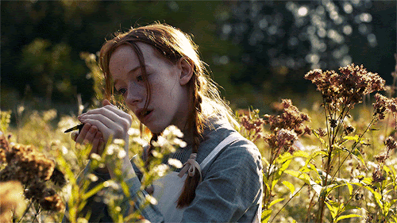
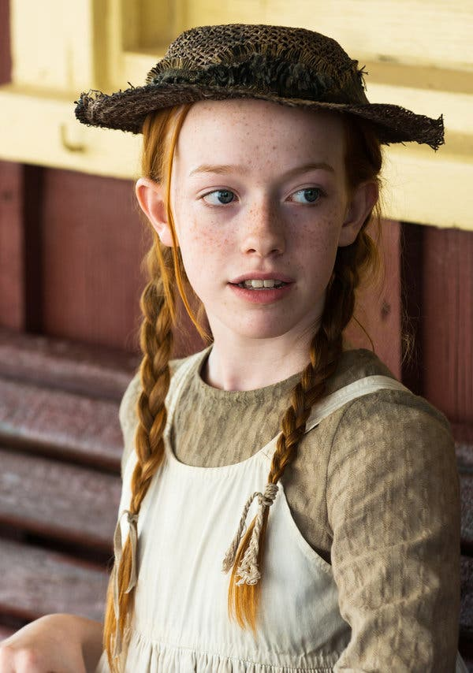
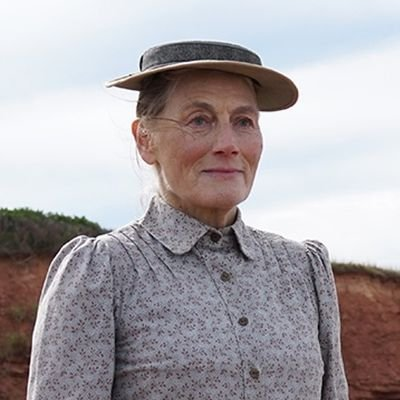
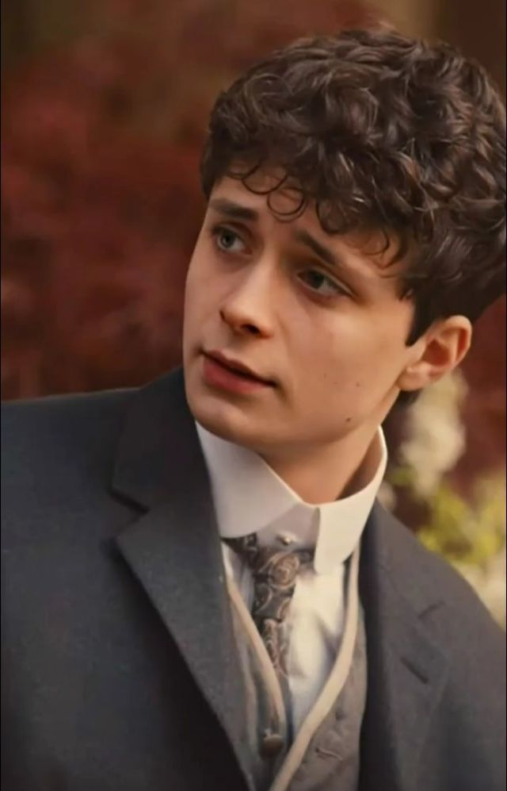
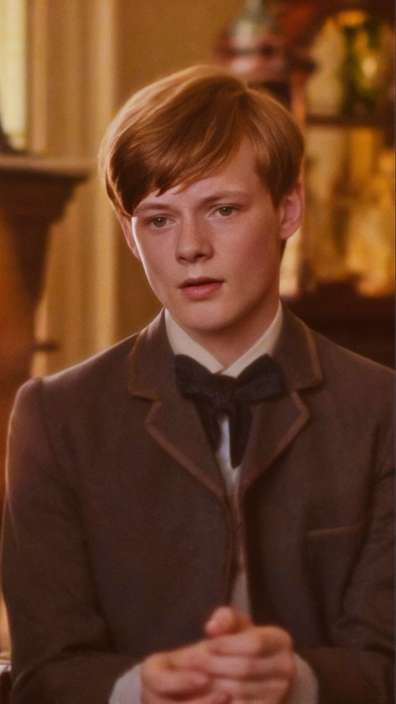

Anne with an E is a Canadian episodic television series adapted from Lucy Maud Montgomery's 1908 classic work of children's literature, Anne of Green Gables. It was created by Moira Walley-Beckett for CBC and stars Amybeth McNulty as Anne Shirley, Geraldine James as Marilla Cuthbert, R. H. Thomson as Matthew Cuthbert, Dalila Bela as Diana Barry and Lucas Jade Zumann as Gilbert Blythe. The series premiered on March 19, 2017, on CBC and on May 12 internationally on Netflix. It was renewed for a second season on August 3, 2017 and for a third season in August 2018. Shortly after the third season was released in 2019, CBC and Netflix announced that the series was cancelled.
Official Trailer on YouTube
|  | |
Anne with an E is described as a coming-of-age story about an outsider who fights for acceptance, for her place in the world and for love. The drama revolves around a young orphaned girl who, after an abusive childhood spent in orphanages and the homes of strangers, is mistakenly sent to live with an elderly spinster and her aging brother. Anne with an E is described as a coming-of-age story about an outsider who fights for acceptance, for her place in the world and for love. The drama revolves around a young orphaned girl who, after an abusive childhood spent in orphanages and the homes of strangers, is mistakenly sent to live with an elderly spinster and her aging brother.
Over time, 13-year-old Anne will transform their lives and eventually the small town in which they live, with her unique spirit, fierce intellect and brilliant imagination. While the new series will follow a similar storyline to the book that millions of readers around the world know and love, it will also chart new territory. Anne and the rest of the characters in and around Green Gables will experience new adventures reflecting timeless issues, including themes of identity, sexism, bullying, prejudice and trusting oneself.
You can watch it on Netflix www.netflix.com
| 
Amybeth McNulty |

Geraldine James |

R. H. Thomson |
| 
Lucas Jade Zumann |

Dalila Bela |

Cory Gruter-Andrew |